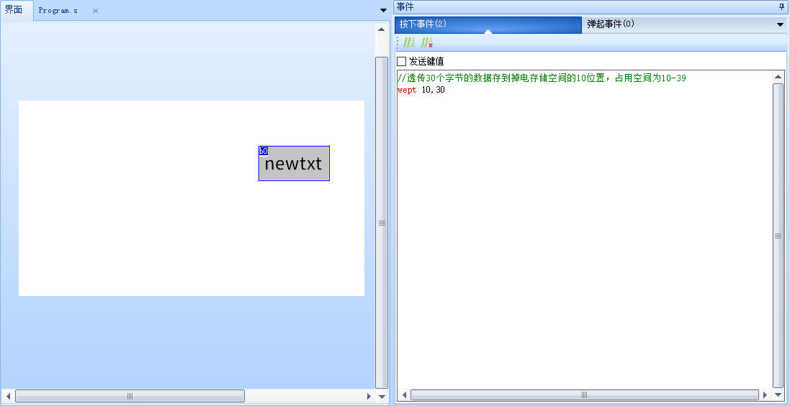

wept-通过串口透传数据到掉电存储空间
(仅k0系列/x系列支持)
注意
第一次使用掉电存储空间前（新屏幕），必须对掉电存储空间进行初始化 如何对掉电存储空间进行初始化
未初始化的掉电存储空间里面有什么数据是不确定的，可能会导致程序运行出错，例如会导致模拟器中的效果与串口屏实物的效果不一致
存储空间的读写范围是0-1023。
危险
危险提示！！！
掉电存储空间写入寿命有限，请勿频繁擦写，只建议存储低频次修改的数据，例如用户名，密码等，写入消耗掉电存储空间寿命，读取不消耗掉电存储空间寿命
掉电存储空间就像1张纸一样，读取不消耗寿命，但是写入时需要擦除，此时纸张越来越薄，直到有一天纸张破了，就无法写入了，这将会导致屏幕功能异常！！！
不建议用户使用掉电存储空间来记录开关机时间！！！
如果以1秒1次的速度向eeprom写入数据，一天将会写入86400次左右，大约1-10天的时间便会将掉电存储空间的寿命用尽！！！
写入数据后不能马上从原有位置读取数据,需等待几秒后再读取
写入数据后不允许立刻断电,需等待几秒后再断电
wept add,lenth
add: 用户存储区位置(从0开始)
lenth:透传长度
wept-示例
//透传30个字节的数据存到掉电存储空间的10位置，占用空间为10-39
wept 10,30

备注：
1.发完透传指令后，用户需要等待设备响应才能开始透传数据，设备收到透传指令后，准备透传初始化数据大概需要5ms左右(如果在透传指令执行前串口缓冲区还有很多别的指令，那时间会更长)，设备透传初始化准备好以后会发送一个透传就绪的数据给用户（0XFE+结束符），表示设备已经准备好，此时可以开始发送透传数据。透传数据为纯16进制数据，不再使用字符串，也不再需要结束符,设备收完指定的数据量以后，才会恢复指令接收状态。否则一直处于数据透传状态，透传数据完成以后,设备会发送结束标记给用户（0XFD+结束符）。
2.用户存储区大小为1k，位置为0-1023
wept-c语言示例
透传30个字节的数据存到掉电存储空间的10位置，占用空间为10-39
//透传30个字节的数据存到掉电存储空间的10位置，占用空间为10-39
printf("wept 10,30\xff\xff\xff");
//等待适量时间
delay_ms(100);
for(int i =0;i<30;i++)
{
//发送16进制数据
printf("%c",(int)(rand() % 256));
}
//确保透传结束，以免影响下一条指令
printf("\x01\xff\xff\xff");
wept指令-样例工程下载
演示工程下载链接：